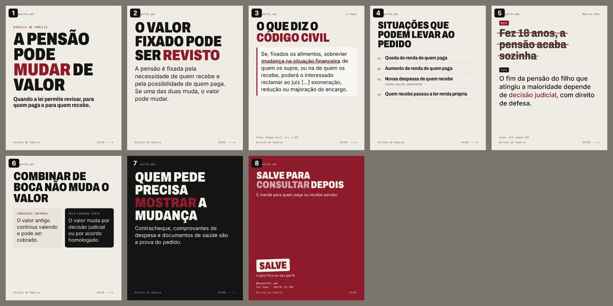
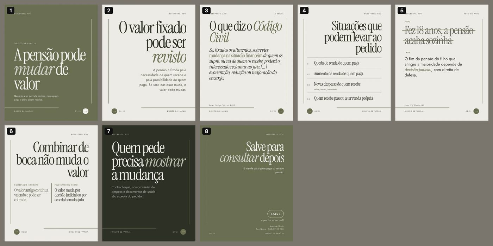
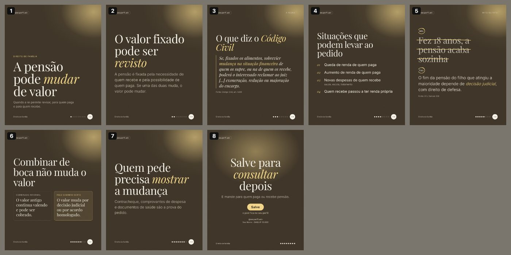
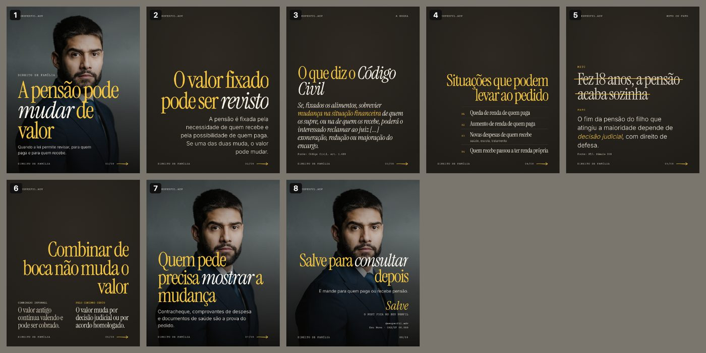
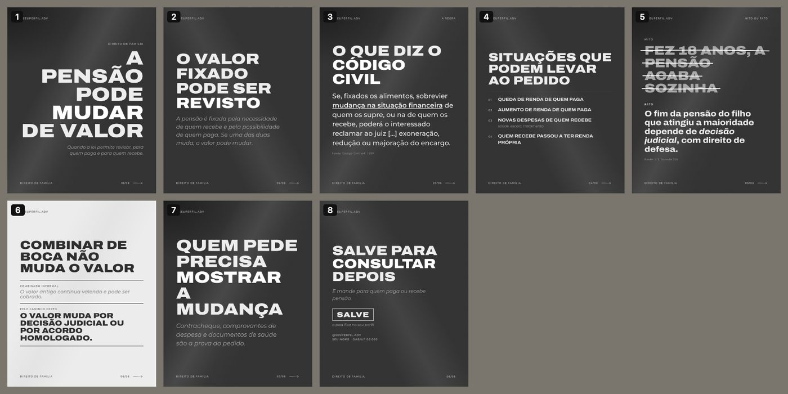
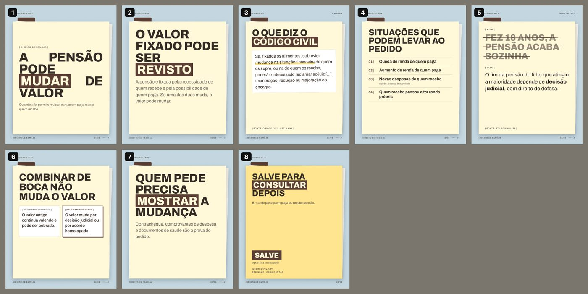

Caderno
Papel claro com textura, título condensado em caixa alta, palavra-chave na cor de destaque e marcas de caneta (grifo, risco, círculo) sobre o print.

O mesmo carrossel de exemplo montado em cada estilo. As suas cores, fontes e fotos entram por cima de qualquer um. Escolha um, clique em "Copiar pedido" e cole na conversa com o Claude.
Papel claro com textura, título condensado em caixa alta, palavra-chave na cor de destaque e marcas de caneta (grifo, risco, círculo) sobre o print.

Papel claro, serifa condensada enorme com itálico na palavra-chave, texto curto ao lado e lados que alternam a cada lâmina, como páginas de revista.

Fundo escuro e quente com luz difusa no canto, serifa leve, rótulo do passo circulado à mão e bolinhas que mostram em que lâmina o leitor está.

Foto real sangrada com véu escuro e grão, título em serifa condensada na cor de destaque, palavra-chave em itálico e detalhes datilografados. Sem foto, vira fundo escuro com grão.

Grafite com feixe de luz, caixa alta larga e pesada, itálico fino para a explicação e tachado com seta para corrigir a ideia errada.

Folha creme dentro de uma pasta com aba, sobre fundo colorido, como um processo físico: título grotesco em caixa alta, rótulos entre colchetes e numeração com fio.
